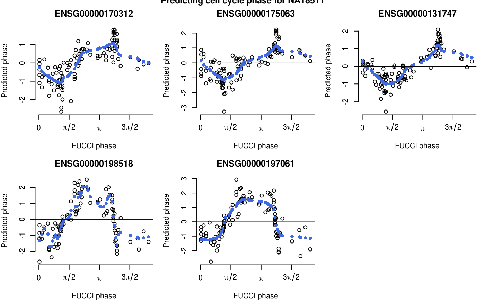

R/cycle_npreg.R
cycle_npreg_insample.RdEstimates cyclic trends of gene expression levels using training data.
cycle_npreg_insample(Y, theta, ncores = 4, polyorder = 2, method.trend = c("trendfilter", "loess", "bspline"))
| Y | A matrix of normalized and transformed gene expression values. Gene by sample. |
|---|---|
| theta | A vector of angles. |
| ncores | We use doParallel package for parallel computing. |
| polyorder | We estimate cyclic trends of gene expression levels using nonparamtric trend filtering. The default fits second degree polynomials. |
| method.trend | Varous methods that can be applied to estimate cyclic trend of gene expression levels. |
A list with four elements:
Gene expression marix.
Vector of angles or cell cycle phases.
Estimated standard error of the cyclic trend for each gene.
A list of functions for approximating the cyclic trends of gene express levels for each gene.
library(Biobase)#>#>#> #>#> #> #> #> #>#> #> #>#> #> #> #> #> #> #> #> #>#> #> #> #> #># import data data(eset_sub) # select top 5 cyclic genes eset_top5 <- eset_sub[ order(fData(eset_sub)$pve_fucci, decreasing=TRUE)[c(1:5)],] # normalize molecule count for differencese in library sizes counts_normed <- t((10^6)*(t(exprs(eset_top5))/pData(eset_top5)$molecules)) # reordering the data according to FUCCI phase counts_normed <- counts_normed[,order(pData(eset_top5)$theta_shifted)] pdata <- pData(eset_top5)[order(pData(eset_top5)$theta_shifted),] # quantile-transform each gene to normal distribution expr_quant <- do.call(rbind, lapply(seq_len(nrow(counts_normed)), function(g) { yy <- counts_normed[g,] is.zero <- which(yy == 0) qq.map <- qqnorm(yy, plot.it = FALSE) yy.qq <- qq.map$x yy.qq[is.zero] <- sample(qq.map$x[is.zero]) return(yy.qq) }) ) rownames(expr_quant) <- rownames(counts_normed) colnames(expr_quant) <- colnames(counts_normed) # Select samples from NA18511 for our prediction example which_samples_train <- rownames(pdata)[which(pdata$chip_id != "NA18511")] which_samples_predict <- rownames(pdata)[which(pdata$chip_id == "NA18511")] # make an example of using data from 5 individuals to predict # phase in one indivdual Y_train <- expr_quant[, which(colnames(expr_quant) %in% which_samples_train)] theta_train <- pdata$theta_shifted[which(rownames(pdata) %in% which_samples_train)] names(theta_train) <- rownames(pdata)[which(rownames(pdata) %in% which_samples_train)] # obtain cyclic function estimates fit_train <- cycle_npreg_insample(Y = Y_train, theta = theta_train, polyorder=2, ncores=2, method.trend="trendfilter")#>Y_predict <- expr_quant[, which(colnames(expr_quant) %in% which_samples_predict)] theta_test <- pdata$theta[which(rownames(pdata) %in% which_samples_predict)] names(theta_test) <- rownames(pdata)[which(rownames(pdata) %in% which_samples_predict)] fit_predict <- cycle_npreg_outsample(Y_test=Y_predict, sigma_est=fit_train$sigma_est, funs_est=fit_train$funs_est, method.trend="trendfilter", ncores=1, get_trend_estimates=TRUE)#>par(mfrow=c(2,3), mar=c(4,4,3,1)) for (g in seq_len(5)) { plot(fit_predict$Y_reordered[g,], x=fit_predict$cell_times_reordered, axes=FALSE, xlab="FUCCI phase", ylab="Predicted phase") points(y=fit_predict$funs_reordered[[g]](fit_predict$cell_times_reordered), x=fit_predict$cell_times_reordered, pch=16, col="royalblue") axis(2); axis(1,at=c(0,pi/2, pi, 3*pi/2, 2*pi), labels=c(0,expression(pi/2), expression(pi), expression(3*pi/2), expression(2*pi))) abline(h=0, lty=1, col="black", lwd=.7) title(rownames(fit_predict$Y_reordered)[g]) } title("Predicting cell cycle phase for NA18511", outer=TRUE)